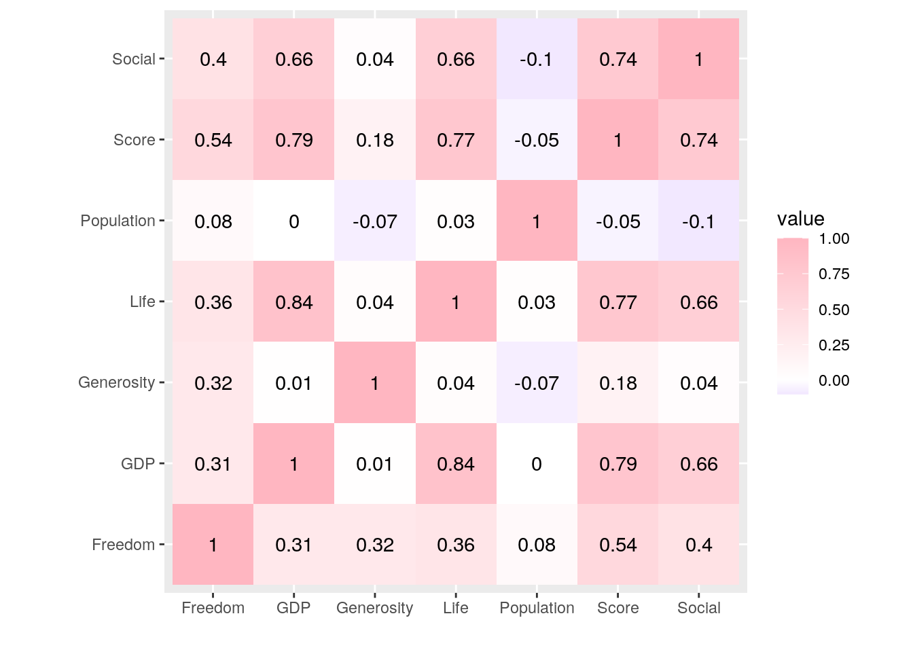
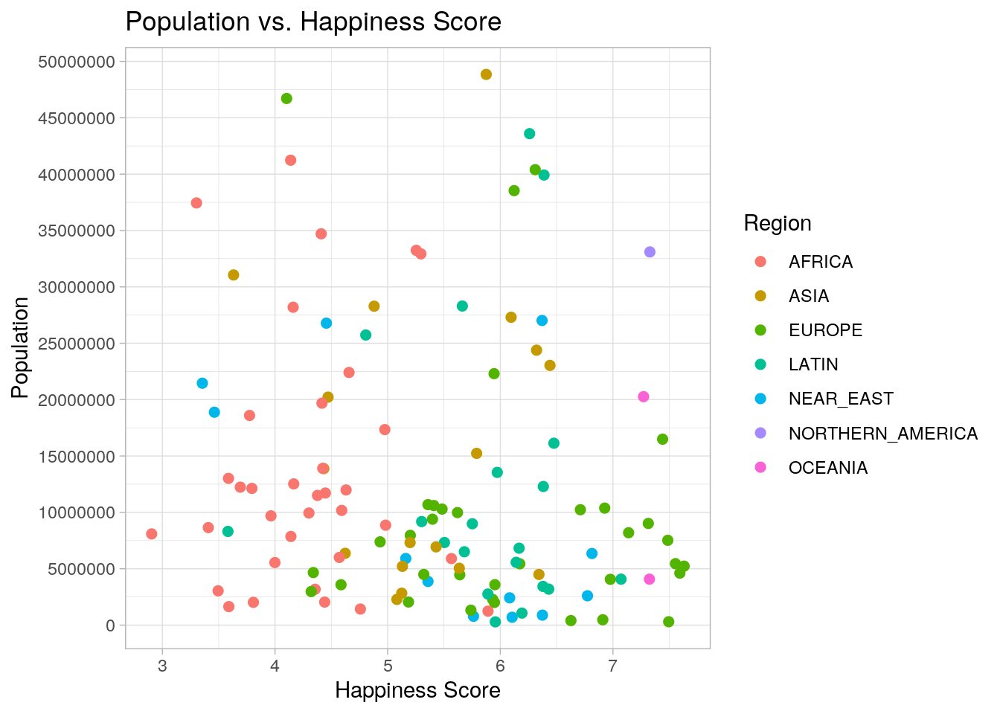
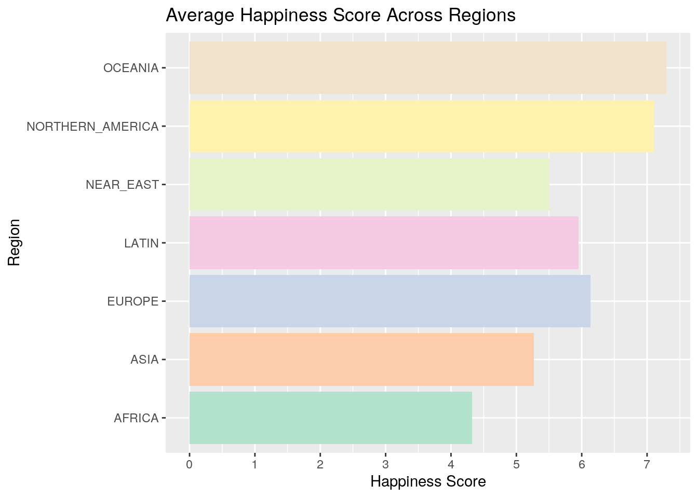
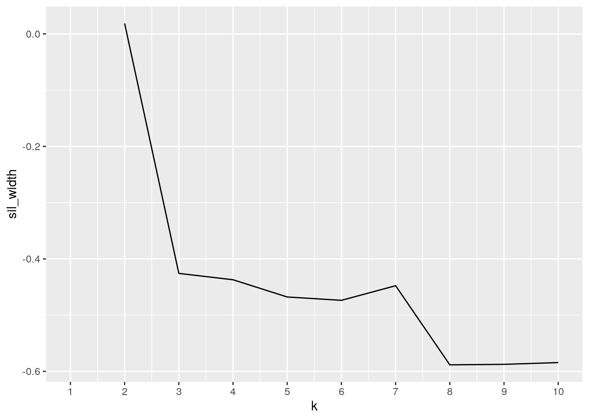
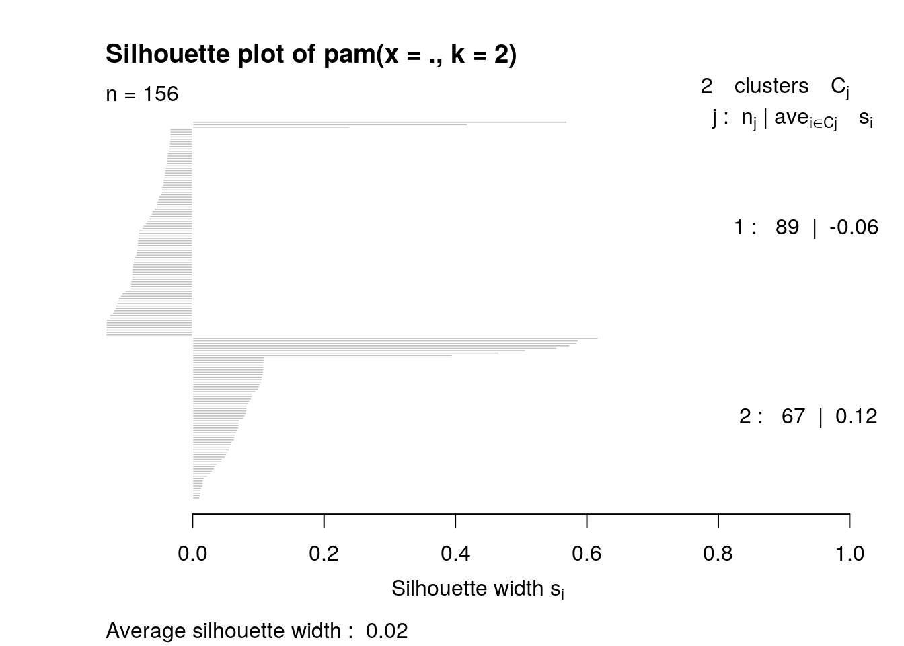
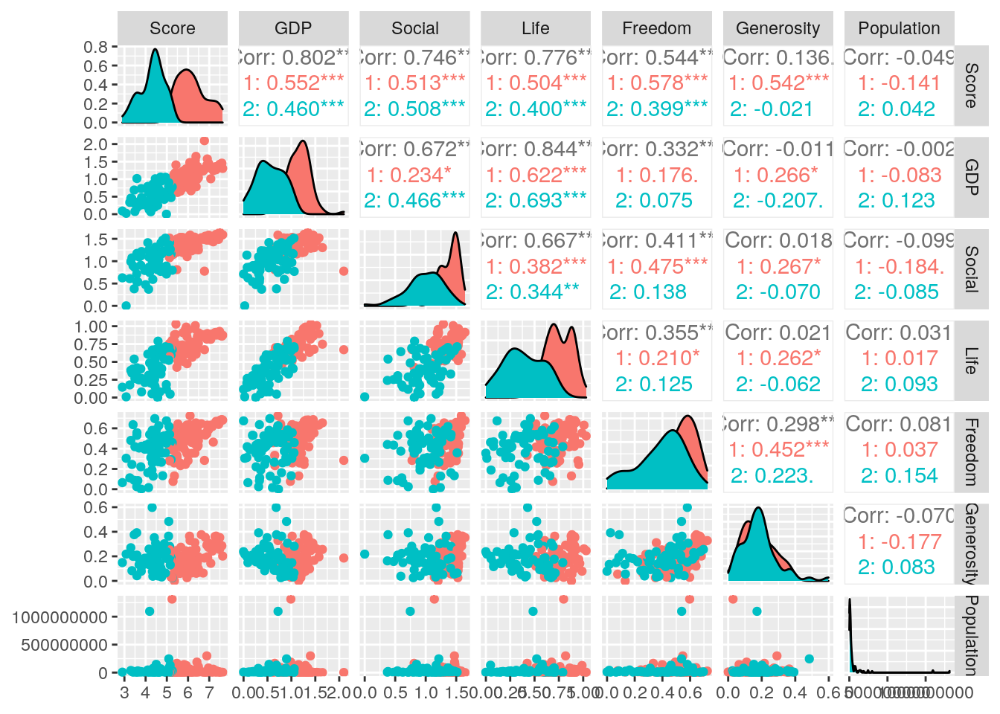

The first data set is the World Happiness Report, which contains the data from a landmark survey. The data ranks 155 countries by their happiness score. The data also contains information regarding how the economy (GDP per Capita), family, health (life expectancy), freedom, and other factors contribute to the happiness score. The second data set contains a list of countries, the region/continent in which the country is located in, and the countries population. Both of these datasets were acquired through the site Kaggle. I found the the Happiness datasets interesting because I didn’t know that happiness levels and scores was of the various countries was something that researched and examined by the United Nations. I was interested to see if there was a relationship between which continent had the happiest countries; therefore, the second data set was chosen to determine if a relationship exists.
Below are previews of both data set
library(tidyverse)
happy <- read_csv("~/2018.csv")
countries <- read_csv("~/countries.csv")
head(happy)## # A tibble: 6 x 8
## `Overall rank` `Country or reg… Score `GDP per capita` `Social support`
## <dbl> <chr> <dbl> <dbl> <dbl>
## 1 1 Finland 7.63 1.30 1.59
## 2 2 Norway 7.59 1.46 1.58
## 3 3 Denmark 7.56 1.35 1.59
## 4 4 Iceland 7.50 1.34 1.64
## 5 5 Switzerland 7.49 1.42 1.55
## 6 6 Netherlands 7.44 1.36 1.49
## # … with 3 more variables: `Healthy life expectancy` <dbl>, `Freedom to make
## # life choices` <dbl>, Generosity <dbl>head(countries)## # A tibble: 6 x 3
## Country Region Population
## <chr> <chr> <dbl>
## 1 Angola AFRICA 12127071
## 2 Benin AFRICA 7862944
## 3 Botswana AFRICA 1639833
## 4 Burkina Faso AFRICA 13902972
## 5 Burundi AFRICA 8090068
## 6 Cameroon AFRICA 17340702project <- happy %>% left_join(countries, by = c(`Country or region` = "Country")) %>%
select(-"Overall rank") %>% rename(Freedom = "Freedom to make life choices") %>%
rename(GDP = "GDP per capita") %>% rename(Social = "Social support") %>%
rename(Life = "Healthy life expectancy")options(scipen = 999)
project %>% select(-"Country or region") %>% select(-"Region") %>%
summarise_all(list(Min = min, Mean = mean, Max = max, Sd = sd,
Median = median), na.rm = T) %>% pivot_longer(contains("_")) %>%
arrange(name) %>% separate(name, into = c("Numeric", "Statistics")) %>%
pivot_wider(names_from = "Statistics", values_from = "value")## # A tibble: 7 x 6
## Numeric Max Mean Median Min Sd
## <chr> <dbl> <dbl> <dbl> <dbl> <dbl>
## 1 Freedom 7.24e-1 0.455 0.487 0 1.62e-1
## 2 GDP 2.10e+0 0.891 0.950 0 3.92e-1
## 3 Generosity 5.98e-1 0.181 0.174 0 9.85e-2
## 4 Life 1.03e+0 0.597 0.644 0 2.48e-1
## 5 Population 1.31e+9 43513573. 10205234. 287730 1.46e+8
## 6 Score 7.63e+0 5.38 5.38 2.90 1.12e+0
## 7 Social 1.64e+0 1.21 1.25 0 3.02e-1The data was tidy prior to the start of the project; therefore, the pivot_longer and pivot_wider functions were used to rearrange the summary statistics. After creating the summary statistics, the results of each statistic was listed as a wide table. Using the “pivot_longer” function, each column that contained "_" in the column name was then taken and place in a column together, called “name.” Afterwards, the name column was separated into two columns, with the original column names in one and the statistics into another. Last, using “pivot_wider,” each of the statistics were separated into columns.
project <- happy %>% left_join(countries, by = c(`Country or region` = "Country")) %>%
select(-"Overall rank") %>% rename(Freedom = "Freedom to make life choices") %>%
rename(GDP = "GDP per capita") %>% rename(Social = "Social support") %>%
rename(Life = "Healthy life expectancy")Using left join, I combined the values from the countries datas et to the values in the happy data set. Left join was used because I wanted to keep all the values from the happy data set and only add the countries from the countries data set that matched the countries already present on the happy data set. Prior to joining the data sets, 156 observations were in the happy data set and 277 observations were in the countries data set. Since left join was used, the final data set has the same number of observations from the happy data set (156 observations); however, 121 observations were dropped from the countries data set. A potential problem that could have occurred is some of the values from the happy data set may not have a population or region listed for them because they did not have the exact same name on the countries data set.
options(scipen = 999)
project %>% select(-"Country or region") %>% select(-"Region") %>%
summarise_all(list(Min = min, Mean = mean, Max = max, Sd = sd,
Median = median), na.rm = T) %>% pivot_longer(contains("_")) %>%
arrange(name) %>% separate(name, into = c("Numeric", "Statistics")) %>%
pivot_wider(names_from = "Statistics", values_from = "value") %>%
rename(`Standard Deviation` = "Sd", Data = "Numeric") %>%
mutate(Range = Max - Min)## # A tibble: 7 x 7
## Data Max Mean Median Min `Standard Deviatio… Range
## <chr> <dbl> <dbl> <dbl> <dbl> <dbl> <dbl>
## 1 Freedom 7.24e-1 4.55e-1 4.87e-1 0. 0.162 7.24e-1
## 2 GDP 2.10e+0 8.91e-1 9.49e-1 0. 0.392 2.10e+0
## 3 Generosi… 5.98e-1 1.81e-1 1.74e-1 0. 0.0985 5.98e-1
## 4 Life 1.03e+0 5.97e-1 6.44e-1 0. 0.248 1.03e+0
## 5 Populati… 1.31e+9 4.35e+7 1.02e+7 2.88e5 145962600. 1.31e+9
## 6 Score 7.63e+0 5.38e+0 5.38e+0 2.90e0 1.12 4.73e+0
## 7 Social 1.64e+0 1.21e+0 1.25e+0 0. 0.302 1.64e+0project %>% select(-"Country or region") %>% group_by(Region) %>%
summarise_all(list(Min = min, Mean = mean, Max = max, SD = sd,
Median = median), na.rm = T) %>% pivot_longer(contains("_")) %>%
arrange(Region, name) %>% pivot_wider(names_from = "name",
values_from = "value") %>% filter(!is.na(Region))## # A tibble: 7 x 36
## Region Freedom_Max Freedom_Mean Freedom_Median Freedom_Min Freedom_SD GDP_Max
## <chr> <dbl> <dbl> <dbl> <dbl> <dbl> <dbl>
## 1 AFRICA 0.674 0.389 0.428 0 0.165 1.09
## 2 ASIA 0.724 0.502 0.539 0.085 0.148 1.53
## 3 EUROPE 0.686 0.473 0.492 0.131 0.160 1.58
## 4 LATIN 0.632 0.505 0.548 0.025 0.150 1.22
## 5 NEAR_… 0.654 0.422 0.468 0.088 0.162 2.10
## 6 NORTH… 0.653 0.6 0.6 0.547 0.0750 1.40
## 7 OCEAN… 0.669 0.658 0.658 0.647 0.0156 1.34
## # … with 29 more variables: GDP_Mean <dbl>, GDP_Median <dbl>, GDP_Min <dbl>,
## # GDP_SD <dbl>, Generosity_Max <dbl>, Generosity_Mean <dbl>,
## # Generosity_Median <dbl>, Generosity_Min <dbl>, Generosity_SD <dbl>,
## # Life_Max <dbl>, Life_Mean <dbl>, Life_Median <dbl>, Life_Min <dbl>,
## # Life_SD <dbl>, Population_Max <dbl>, Population_Mean <dbl>,
## # Population_Median <dbl>, Population_Min <dbl>, Population_SD <dbl>,
## # Score_Max <dbl>, Score_Mean <dbl>, Score_Median <dbl>, Score_Min <dbl>,
## # Score_SD <dbl>, Social_Max <dbl>, Social_Mean <dbl>, Social_Median <dbl>,
## # Social_Min <dbl>, Social_SD <dbl>In the first table created, the statistics (maximum, minimum, median, mean, and standard deviation) of each numerical variable was calculated. This was achieved by using the “summarize all” function. Afterwards, a combination of the pivot functions were used to organize the results in a neat table that each of the statistics as the variables and each of the numerical categories were the observations. In addition, a new variable called “Range” was calculated for by subtracting the minimum value from the maximum value. The freedom (freedom to make life choices) variable had a maximum value of 0.724, mean value of 0.455, median value of 0.487, minimum value of 0., standard deviation of 0.162, and range of 0.724.The GDP variable had a maximum value of 2.10, mean value of 0.891, median value of 0.949, minimum value of 0., standard deviation of 0.392, and range of 2.10.The generosity variable had a maximum value of 0.598, mean value of 0.181, median value of 0.174, minimum value of 0., standard deviation of 0.0985, and range of 0.598.The life (healthy life expectancy) variable had a maximum value of 1.03, mean value of 0.597, median value of 0.644, minimum value of 0., standard deviation of 0.248, and range of 1.03. The social (social support) variable had a maximum value of 1.64, mean value of 1.21, median value of 1.25, minimum value of 0., standard deviation of 0.302, and range of 1.64.
In the second table, the statistics (maximum, minimum, median, mean, and standard deviation) of each numerical variable was calculated based on the region the country was located in. The region with the greatest average population was North America with 165771574 people, while the region with the smallest average population was the Oceania region with 12170111 people. The Oceania region also had the highest average in the life variable of 0.893, which is associated with life expectancy. While Africa has the lowest average in the life variable with a value of 0.320.
project %>% select_if(is.numeric) %>% cor(use = "complete.obs") %>%
as.data.frame %>% rownames_to_column %>% pivot_longer(-1) %>%
ggplot(aes(rowname, name, fill = value)) + geom_tile() +
geom_text(aes(label = round(value, 2))) + xlab("") + ylab("") +
coord_fixed() + scale_fill_gradient2(low = "blue", mid = "white",
high = "light pink")
project %>% filter(!is.na(Region)) %>% filter(Population < 50000000) %>%
ggplot(aes(Score, Population, color = Region)) + geom_point(size = 2) +
theme_light() + xlab("Happiness Score") + ylab("Population") +
scale_y_continuous(breaks = seq(0, 50000000, 5000000)) +
ggtitle("Population vs. Happiness Score")
project %>% filter(!is.na(Region)) %>% ggplot(aes(Region, Score)) +
geom_bar(stat = "summary", fun = "mean", aes(fill = Region)) +
scale_y_continuous("Happiness Score", breaks = seq(0, 8,
1)) + xlab("Region") + coord_flip() + scale_fill_brewer(palette = "Pastel2") +
theme(legend.position = "none") + ggtitle("Average Happiness Score Across Regions") A heat map to created to observe the correlation between the various numerical variables. From this heat map, it can be seen that the majority of the positive correlation. Population size and GDP appear to have no correlation with each other, due to the observed correlation value of 0. In addition, it appears that population & generosity, happiness score & population size, and social support & population size are the variables that are negatively correlated with correlation values less than 0. In addition to the heat map, two addition graphs were made: Population vs. Happiness Score plot and the Average Happiness Score Across Regions.
In the Population vs. Happiness Score plot, the population of each of the countries was plotted in relation to their happiness scores. In addition, each of the countries were color coded by the region they are located in. With this in mind, it appears that most of the countries have a population size that is less than 25,000,000. It also appears that the countries located in Africa on average have the a smaller population size and lower happiness scores. In addition, even though the Oceania region appear to have the have higher happiness scores, their population sizes are similar to the countries in Africa.
In the Average Happiness Score Across Regions graph, the happiness score was averaged across each of the regions and plotted on a bar graph. From this graph, it appears that the Oceania region had the highest average happiness score, while Africa had the lowest average happiness score. From this graph, the regions can be ranked based on their average happiness score (from highest to lowest: 1. Oceania, 2. Northern America, 3. Europe, 4. Latin, 5. Near East, 6. Asia, 7. Africa).
library(cluster)
library(GGally)
pam_dat <- project %>% rename(Country = "Country or region") %>%
select(-Country, -Region)
sil_width <- vector()
for (i in 2:10) {
pam_fit <- pam(pam_dat, k = i)
sil_width[i] <- pam_fit$silinfo$avg.width
}
ggplot() + geom_line(aes(x = 1:10, y = sil_width)) + scale_x_continuous(name = "k",
breaks = 1:10)
pam1 <- project %>% pam(k = 2)
plot(pam1, which = 2)
project %>% mutate(cluster = as.factor(pam1$clustering)) %>%
ggpairs(columns = c("Score", "GDP", "Social", "Life", "Freedom",
"Generosity", "Population"), aes(color = cluster)) Lastly, clustering and PCA was observed. Using silhouette widths, the numbers of clusters was determined to be 2 because k=2 had the greatest silhouette width. The silhouette widths were also plotted, where the average silhouette width was determined to be 0.02. However, it is important to note that the data set lacks substantial structure because the average silhouette width is very low (0.02). The cluster was then visualized with ggplot2. From the cluster plot, it appears that the greater happiness score (red) is associated with greater values in the other variables as well (GDP, Social, Life, Freedom, Generosity, and Population). In addition, it appears that regardless of the population sizes, freedom and generosity is relatively similar between the two clusters.